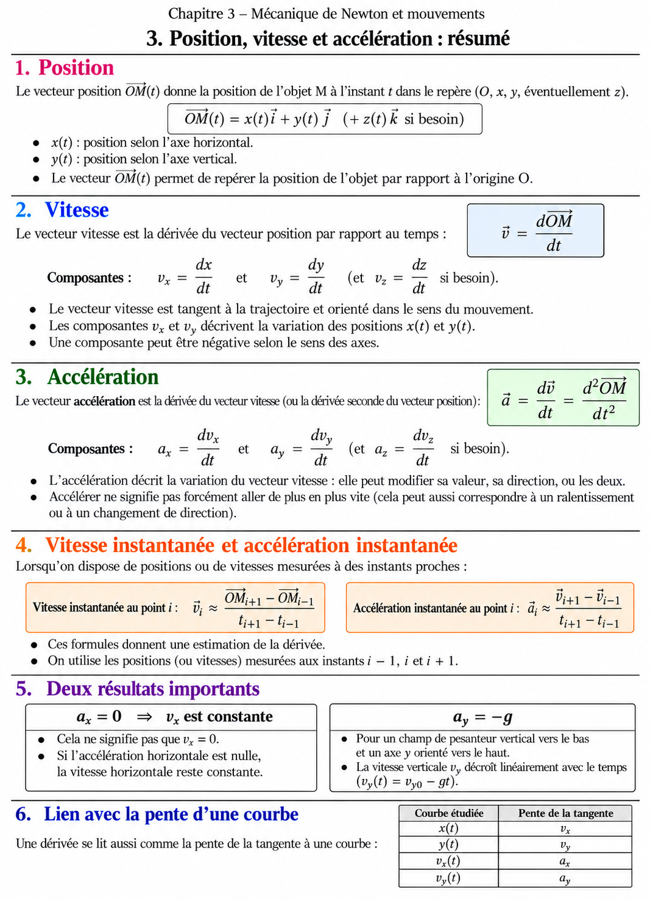
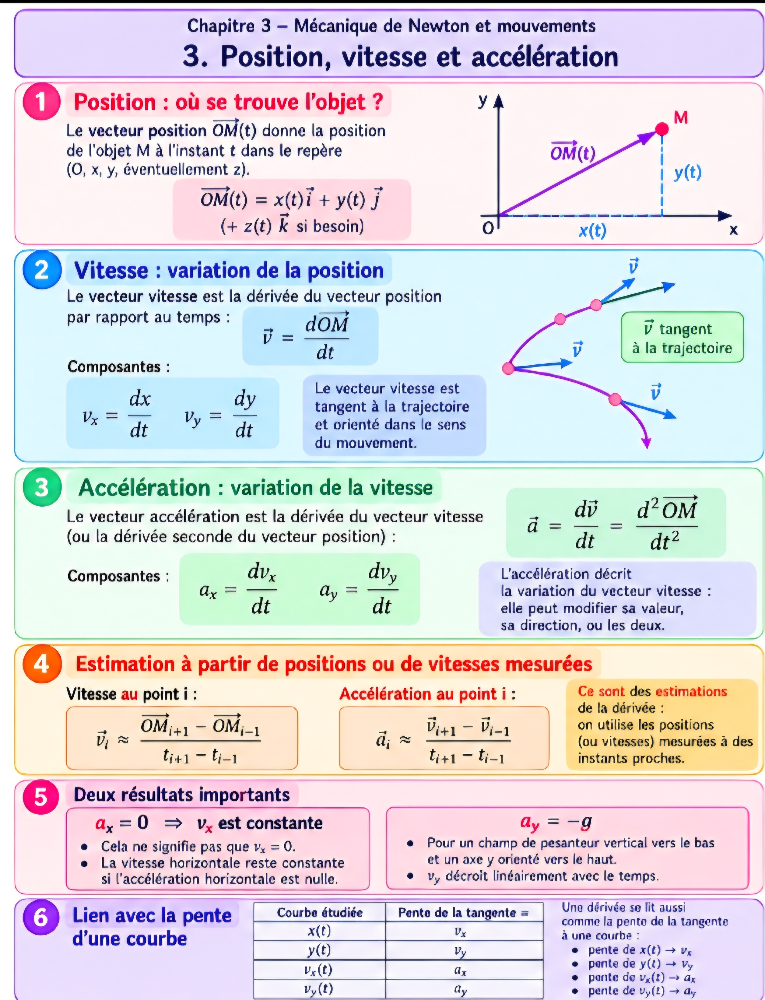
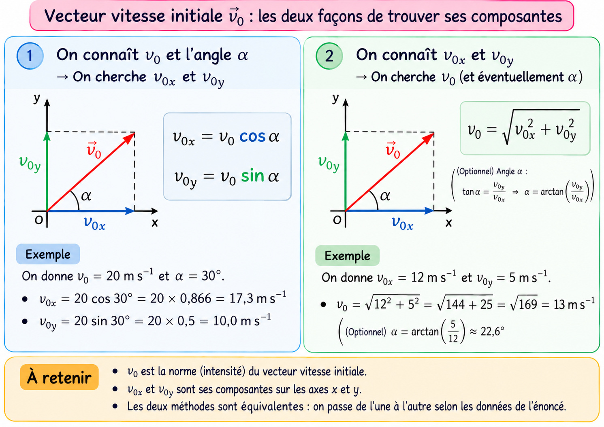
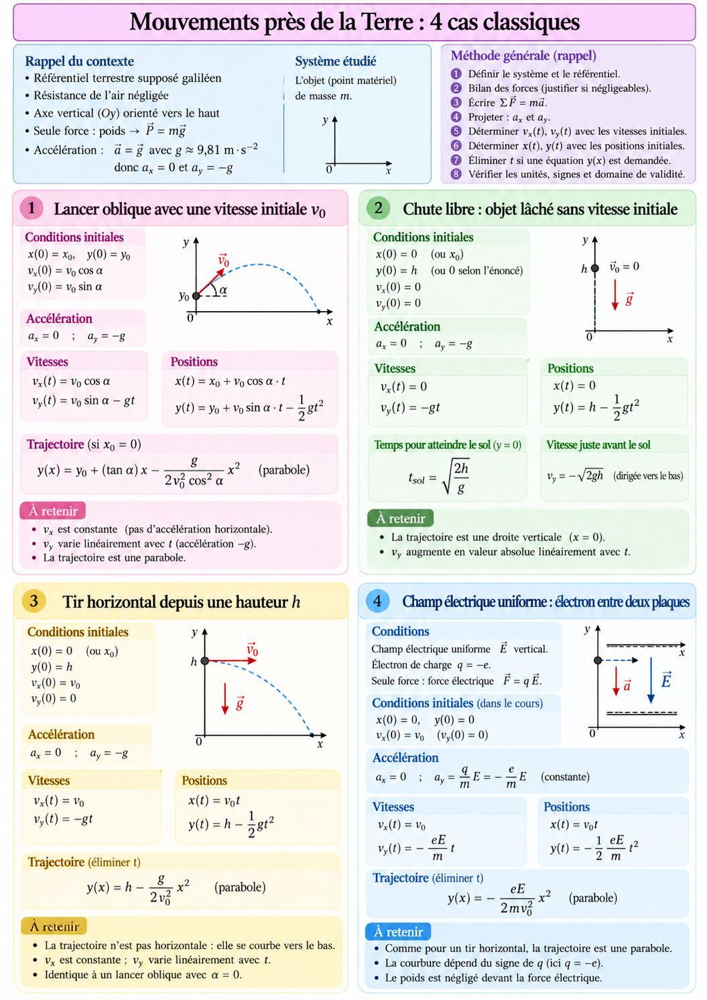
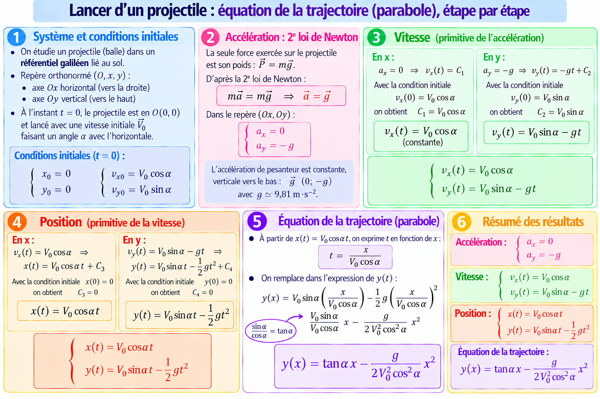
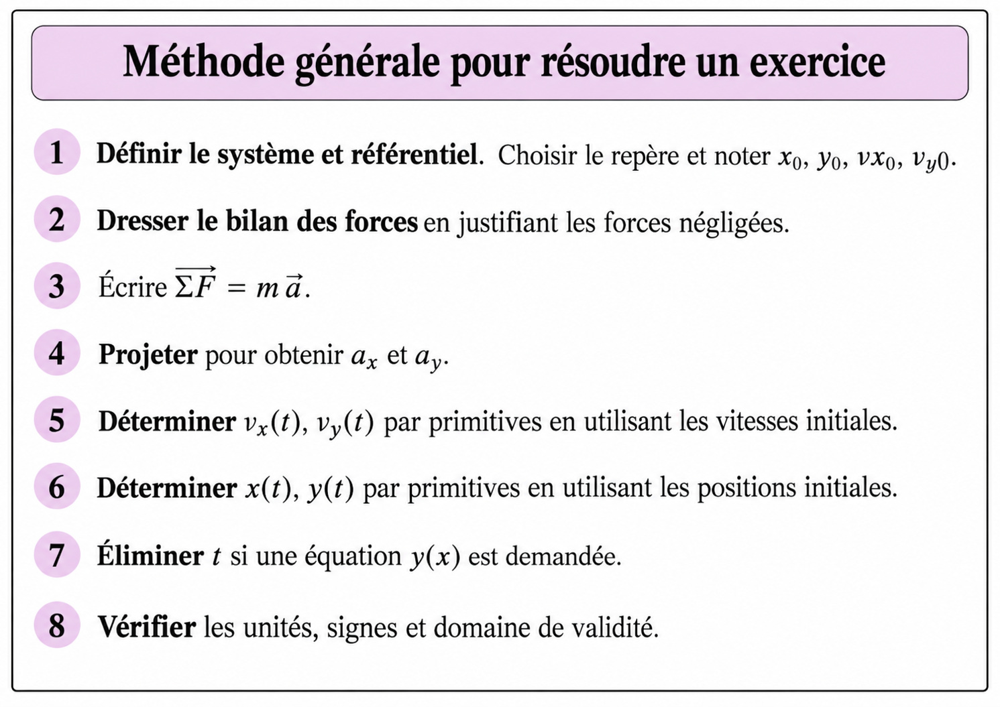
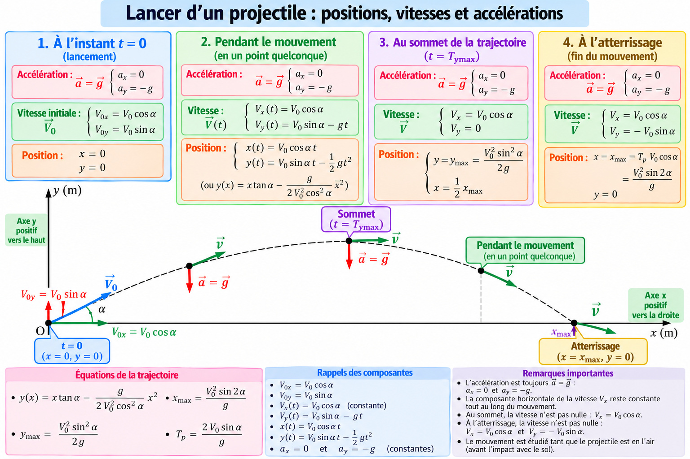
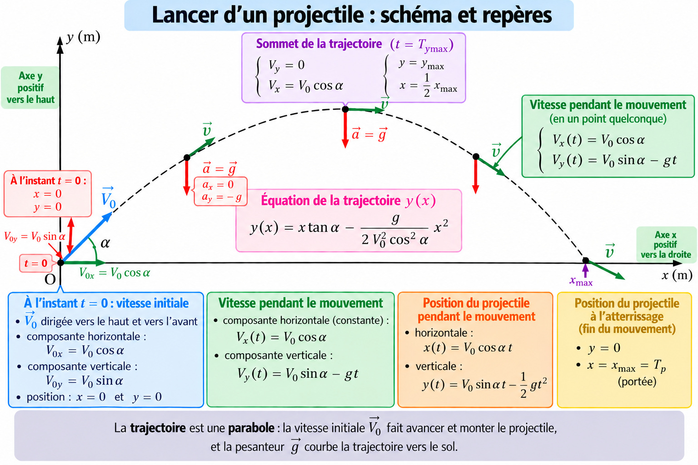

Cas général
8 fiches de révision

1 BASE1Ouvrir la fiche en grand ↗
2 BASE2Ouvrir la fiche en grand ↗
3 CALCULE V0Ouvrir la fiche en grand ↗
4 MVT PRES DE LA TERRE ( repere orthonormé xy)Ouvrir la fiche en grand ↗
5 etape pour equation trajectoireOuvrir la fiche en grand ↗
6 METHODE GENERALEOuvrir la fiche en grand ↗
7 lancé shema 2Ouvrir la fiche en grand ↗
8 shema lancé1Ouvrir la fiche en grand ↗